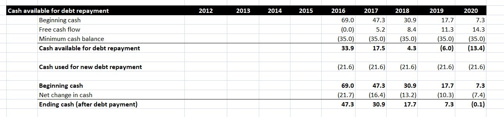
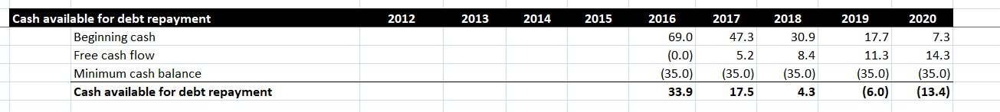
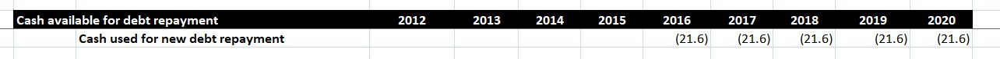
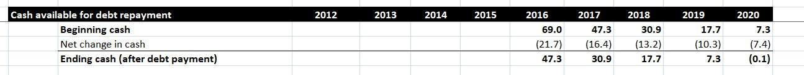

Cash flows after a leveraged buyout can suffer as a result of taking on debt, the standard practice in the leveraged buyout (LBO) process. For the LBO to work, it’s essential that the acquired company can afford the debt repayments that arise as a result of the transaction. This requires the company to have sufficient cash available to meet these debt repayments. As a result, studying the impact of a debt schedule on cash flow is an important part of the LBO modeling process.
In this post, we are modeling an LBO involving a company called MarkerCo, which is being acquired by a private equity firm, PrivEq. In this post, we’ll see examine MarkerCo cash flows after a leveraged buyout.
Our focus in this blog post is not on preparing cash flow projections into the future. We are assuming these have already been prepared. We are focusing on the impact of newly acquired debt on these cash flow projections. We will focus on preparing the following cash flow analysis. Note that our transaction takes place in 2016, so we are making a 5-year projection here, running from 2016 to 2020.

Cash available for Debt Repayment
The amount of cash available for debt repayment determines whether the new debt is likely to be sustainable or not. To calculate the amount of cash available in a given year, we start by identifying the beginning cash for the year. For 2016, this can be found in the statement of cash flows. For other years, the beginning cash will be the ending cash for the previous year. We’ll see how this is calculated soon. We then add free cash flows, which refers to the net increase or decrease in cash for the year. Free cash flows are obtained from the cash flow statement.

Finally, we need to consider the minimum cash balance. This is the amount of cash the company wants to retain on hand at all times. As this cash is not available for debt payments, we subtract it to find the cash available for debt repayment. The minimum cash balance is defined in the LBO model as a transaction assumption. To learn more about transaction assumptions, read this post.
In the case of MarkerCo, the amount of cash available for debt repayment falls dramatically over time. We can see that the beginning cash declines sharply each year. As we will soon see, this is because free cash flows are not generating enough cash to fund debt payments. The high minimum cash balance also proves to be a problem.
Cash used in Debt Repayment
Once we have established how much cash is available for debt repayment, we must calculate how much cash will actually be used to for debt repayments.

This section adds up the total principal repayments, either mandatory or optional, that are incurred every year. We can find the relevant figures in the debt schedule. (Read this post to learn more about the debt schedule for this transaction). In this case, there are two debt instruments: Senior Notes and Subordinated Notes. Only the Senior Notes require the principal to be repaid in the next five years, at a constant rate of 20% per year. As a result, the repayments, and the cash used to make them, are the same in each year from 2016 to 2020.
Cash Flow Positions
Once we have determined how much cash is spent on debt repayments, we can track the projected cash flow position of MarkerCo over the five years to 2020. The beginning cash for 2016 is obtained from the statement of cash flows. The net change in cash is calculated as the free cash flows (found in the cash flow statement or the section on Cash available for Debt Repayment) minus the cash spent on debt repayments. As we can see, the ending cash for one year then becomes the beginning cash for the next year.

In this case, the net change in cash is negative every year. This is because the free cash flows are not large enough to cover the debt repayments. In fact, the business loses so much cash that we can see they run out of cash completely by the end of 2020. In its current form, this LBO transaction is not viable, and changes would have to be made to make the transaction work.
Conclusion
As we have seen, debt repayments can have a big impact on the cash flow position of a company. You should be creating projected cash flow statements as part of your analysis of a complex financial transaction, but you should always expect that debt will have an impact on those statements. A deal that looks good before debt is considered could become unviable afterwards. For this reason, make sure to calculate debt effects when you model financial transactions.